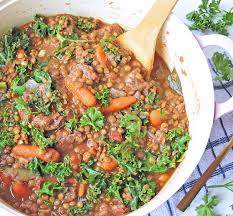

Lentil beef stew

Arijan's self made lentil beef stew
This is just a simple creation I made on my own when I was counting calories. This tasty and hearty dish is guaranteed
to fill up an empty stomach, while maintaining a healthy weight and making sure you get many important
nutrients for your day!
Ingredients
- Carrots, celery, onion, garlic, bell pepper
- Beef broth
- salt and ground pepper to taste
- 2 tablespoons beef broth
- Cumin, chili powder
- 2 cups red lentils
- 1 package ground beef
- 1 can corn and tomatoes
Instructions
- Heat olive oil in a big pot, then cook ground beef until cooked completely
- Remove ground beef and put to side. reheat pot and cook the veggies until cooked
- return the ground beef then add the canned corn and tomatoes.
- add 1 liter water with the beef broth and bring to a boil
- wash the red lentils and dump them in
- let simmer until desired thickness